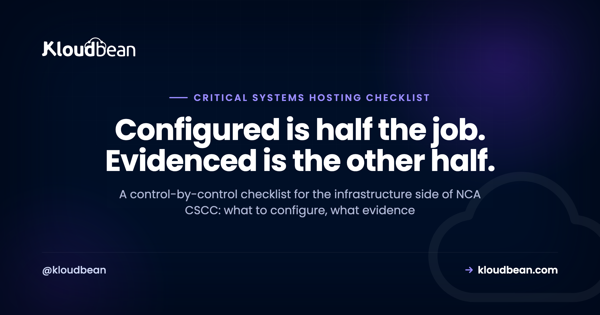

Critical Systems Hosting Checklist: Preparing Infrastructure for an NCA Review

Most teams preparing for a CSCC review discover the same thing: the configuration work is largely done, and the evidence work has barely started. NCA evaluates compliance through self-assessment and on-site audits, which means someone will ask you to show that a control is in place, not just assert it. This checklist runs through the infrastructure-layer controls in order, with the artefact worth keeping for each one, and it separates out the items that no hosting provider can close on your behalf.
Nine areas: identity and access with MFA and no remote access from outside the Kingdom, segregated networks with whitelist-only firewalls, encryption in transit and at rest, patching on a documented cadence with hardening reviews, private-only database access, centralised logging with immutable storage and 18-month retention, daily backups with a recovery test every three months, monthly vulnerability assessments plus six-monthly penetration tests, and multi-zone resilience with a tested DR plan. For each one, keep a dated artefact showing it works.
How to use this
Work through it as a gap list rather than a score. Two columns matter for every row: is the control configured, and can you produce something dated that proves it. A screenshot with no date, or a policy document with no corresponding technical state, tends not to survive scrutiny. Control references are to CSCC-1:2019, and remember that CSCC sits on top of ECC, so the baseline controls need to hold as well.
1. Identity and access
- Remote access from outside the Kingdom is blocked, not merely discouraged (2-2-1-1). Evidence: the network or identity policy that enforces it, plus a denied-attempt log entry.
- Remote access from inside the Kingdom is restricted, verified, and monitored (2-2-1-2). Evidence: VPN configuration and access logs.
- Multi-factor authentication for all users (2-2-1-3) and for privileged users on the systems used to manage critical systems (2-2-1-4). Evidence: an enrolment report showing coverage, not just that the feature is available.
- A secure password policy (2-2-1-5), with passwords stored and processed using secure methods such as hashing (2-2-1-6).
- Service accounts managed securely with interactive login disabled (2-2-1-7). Evidence: the account inventory and its login settings.
- Access rights to critical systems reviewed at least every three months (2-2-2). Evidence: dated review records. This is the one people forget between audits.
2. Network
- Critical system networks logically or physically segregated and isolated (2-4-1-1). Evidence: network diagram plus the actual subnet and routing configuration.
- Firewall access lists are whitelist-only, deny by default (2-4-1-9).
- Firewall rules and access lists reviewed at least every six months (2-4-1-2). Evidence: dated review output.
- No wireless connectivity to critical systems (2-4-1-4).
- DDoS protection in place (2-4-1-8).
- Privileged accounts operate from workstations on an isolated management network, separated from email and internet (2-3-1-4).
- Internet connectivity removed for internal critical systems with no genuine need for outside access (2-4-1-6).
3. Encryption
- All data in transit encrypted (2-7-1-1). Evidence: TLS configuration and a scan result showing the minimum version enforced.
- All data at rest encrypted at file, database, or column level (2-7-1-2).
- Non-console administrative access encrypted (2-3-1-5).
- Methods, algorithms, keys, and devices current and in line with NCA guidance (2-7-1-3). Evidence: your key management approach, including who can access keys.
4. Hardening and patching
- Security patches at least monthly for external and internet-connected critical systems, at least quarterly for internal ones (2-3-1-3). Evidence: patch history per host, which is the artefact auditors ask for most often.
- Configuration and hardening reviewed at least every six months (2-3-1-6). Evidence: dated benchmark or review output.
- Default configurations reviewed, and hard-coded, backdoor, and default passwords removed (2-3-1-7).
- Application and software execution whitelisting on servers hosting critical systems (2-3-1-1).
- Endpoint protection on servers hosting critical systems (2-3-1-2).
- System logs and critical files protected from unauthorised access, tampering, modification, and deletion (2-3-1-8).
The cadence in 2-3-1-3 is the row that quietly needs an owner. On a managed enterprise engagement Kloudbean patches internet-facing production monthly and internal environments quarterly, remediates critical vulnerabilities immediately, hardens VMs to CIS benchmarks, and re-reviews configuration every six months, then hands you the dated output. Decide now whether that owner is your team or your provider, because a shared assumption is how a patch history ends up with a nine-month hole in it.
5. Database access
- Direct database access prohibited for everyone except database administrators; all other users reach data through applications only (2-2-1-8). Evidence: network configuration showing the database is not reachable directly, plus the user and role list.
- Consider controls that limit or prevent administrators seeing classified data, which the same control asks you to give consideration to.
This control has more architectural consequence than its length suggests, and we covered it separately in database access control under CSCC 2-2-1-8.
Architecturally it means the database cannot sit on a public endpoint that a person could reach with credentials. On a Kloudbean enterprise engagement the managed database runs on a private IP inside a VPC, reached from the application layer through a connector, with administrative access only via VPN and a bastion. Private networking is an Enterprise capability rather than standard-plan behaviour, which is exactly why this control pushes critical systems onto an enterprise footprint.
6. Logging and monitoring
- Event logs active on all technical components, not only application servers (2-11-1-1).
- File integrity monitoring active and monitored (2-11-1-2).
- User behaviour monitored and analysed (2-11-1-3).
- Security events monitored around the clock (2-11-1-4). Evidence: who watches, on what rota, with what escalation path.
- Logs protected and complete, including time, date, ID, and affected system (2-11-1-5).
- Retention of at least 18 months (2-11-2). Evidence: the bucket retention setting, and a successful retrieval of an event older than a year.
The retention and immutability distinction trips people up, so it has its own walkthrough in CSCC 18-month log retention. The short version: a retention period you can shorten is not immutability. On an enterprise engagement Kloudbean centralises OS, application, and audit logs into write-once storage with a retention lock at the 548-day minimum, plus file integrity monitoring on critical VMs, so the artefact for 2-11-2 is a setting nobody can quietly reduce rather than a promise nobody edited the logs.
7. Backup and resilience
- Online and offline backups covering all critical systems (2-8-1-1).
- Backups at planned intervals, with daily recommended for critical systems (2-8-1-2).
- Backup access, storage, and transfer secured against destruction, unauthorised access, and modification (2-8-1-3).
- Recovery tested at least every three months (2-8-2). Evidence: dated restore test records including how long the restore took.
- A disaster recovery centre for critical systems (3-1-1-1), critical systems inside DR plans (3-1-1-2), and DR plans tested at least annually (3-1-1-3).
Full detail in CSCC backup and disaster recovery.
8. Testing
- Vulnerability assessments on critical systems components at least monthly (2-9-2), using trusted methods and tools (2-9-1-1).
- Vulnerabilities remediated on the required cadence, with critical ones remediated immediately under change management (2-9-1-2, 2-9-1-3).
- Penetration tests at least every six months (2-10-2), covering all technical components and internal and external services (2-10-1-1), by a qualified team (2-10-1-2).
9. Application and data handling
- Multi-tier architecture with at least three tiers (2-12-2 and 2-13-3-1).
- OWASP Top Ten as a minimum for internet-facing web applications (2-12-1-2), with secure session management including authenticity, lockout, and timeout (2-12-1-1).
- Production data not used in other environments without masking or scrambling (2-6-1-1), and not transferred out of production (2-6-1-5).
- All data within critical systems classified (2-6-1-2), with leakage prevention applied to classified data (2-6-1-3).
- Retention periods defined, keeping only required data in production (2-6-1-4).

The items hosting cannot close for you
Worth separating clearly, because assuming a provider covers these is the most common planning error:
- Identifying which systems are critical. Your organisation does this using NCA's criteria, and it is the first implementation step.
- Governance. Strategy, policies, procedures, and a risk register reviewed monthly for critical systems (1-2-1-2), with an annual risk assessment (1-2-1-1).
- Review and audit. Reviewing CSCC implementation annually (1-4-1), and an independent review outside the cybersecurity function at least every three years (1-4-2).
- Human resources. Screening and vetting people who work on critical systems (1-5-1-1), and the staffing requirements in 1-5-1-2.
- Application code. Session management logic, input validation, API security, and the masking logic that 2-6-1-1 requires.
- Record-level data classification. Marking data Confidential, Secret, Internal, or Public needs knowledge of the content and business rules.
- Around-the-clock response. Detection can be built into infrastructure; investigation, severity classification, escalation, and regulator reporting need people.
- Commissioning penetration tests and engaging NCA for formal assessment.
Put the recurring obligations in a calendar before anything else
Configuration is a project and projects end. The cadences don't, and that asymmetry is where reviews find holes. So before you work the gap list, build this calendar and put a name against every row.
| Cadence | What has to happen | The artefact to keep |
|---|---|---|
| Monthly | Patch internet-facing critical systems (2-3-1-3); vulnerability assessment (2-9-2); risk register review | Patch history per host; scan report with remediation notes |
| Every 3 months | Access rights review (2-2-2); backup recovery test (2-8-2); patch internal systems | Dated review record; restore record including how long it took |
| Every 6 months | Firewall and access-list review (2-4-1-2); configuration and hardening review (2-3-1-6); penetration test (2-10-2) | Dated review output; test report plus remediation evidence |
| Annually | DR plan test (3-1-1-3); CSCC implementation review (1-4-1); risk assessment (1-2-1-1) | Dated test record; review report |
| Every 3 years | Independent review from outside the cybersecurity function (1-4-2) | The independent reviewer's report |
| Continuous | Round-the-clock event monitoring (2-11-1-4); 18-month retention (2-11-2) | The rota and escalation path; the retention setting, plus a successful retrieval of an event over a year old |
On a managed enterprise engagement Kloudbean owns the infrastructure half of that calendar and produces the artefacts as managed reports: the monthly and quarterly patch cadence, the six-monthly hardening and firewall reviews, daily backups with quarterly restore tests, immutable logging held to the retention minimum, multi-zone failover, and network segregation per environment. That runs on a dedicated cloud account, which can sit in Google Cloud's Dammam region where in-Kingdom placement is required. It's an enterprise engagement with a named onboarding manager and DevOps engineer, not a toggle on a self-serve plan, and it's worth saying plainly that Kloudbean is aligned with the CSCC rather than certified against it.
The rest of the calendar has no provider-shaped answer, and you should be suspicious of anyone who says otherwise. Nobody can decide for you which of your systems meet NCA's criticality criteria. Nobody else can vet your staff, own your risk register, write the masking logic 2-6-1-1 asks for, classify your records, commission your penetration test, or talk to the regulator on your behalf. SOC and SIEM work sits in between: real, and scoped collaboratively per engagement rather than sold as a fixed package. And the failure mode that catches the most organisations is neither technical nor commercial. It's a retention setting that reverted to a cloud default, or a three-monthly access review that nobody put in a diary. Both survive an audit only if someone's name is on the row.
Also worth knowing
Start with NCA CSCC explained for the framework, then the deep dives on log retention, backup and DR, and database access control. For the baseline and adjacent frameworks see NCA ECC compliant hosting and PDPL compliance hosting, plus data residency in Saudi Arabia and the security headers guide.
Take it off localhost for good.
Run the app as an always-on process with managed databases, Redis, object storage, and automatic backups beside it. Deploy from Git with live build logs, and keep the infrastructure someone else's problem.
- ✓ Managed databases
- ✓ Always-on processes
- ✓ Object storage
- ✓ Automatic backups
- ✓ Free SSL
- ✓ Git deploy
- ✓ Free migration
In-Kingdom plans from $36/mo on Google Cloud Dammam · Free migration assistance · Free trial
FAQ
What evidence does an NCA review ask for?
Dated artefacts showing a control works, rather than statements that it exists. In practice that means patch histories per host, access review records every three months, firewall review output every six months, restore test records with timing, retention settings plus a successful retrieval of an old event, and MFA enrolment coverage. Configuration alone is usually the easier half.
How often do CSCC reviews and tests need to happen?
Several different cadences, which is why a calendar helps: access rights reviewed every three months, backup recovery tested every three months, vulnerability assessments monthly, patching monthly for internet-facing and quarterly for internal systems, firewall rules and hardening reviewed every six months, penetration tests every six months, DR plans tested annually, and CSCC implementation reviewed annually with an independent review at least every three years.
Can a hosting provider complete this checklist for me?
Only the infrastructure rows. Identifying critical systems, governance and the risk register, HR screening, application code security, record-level data classification, commissioning penetration tests, and engaging NCA remain with your organisation. A managed provider can configure and maintain the technical controls and supply the evidence, which is substantial but not the whole framework.
Where do most organisations have gaps?
Usually not in configuration. The recurring gaps are the recurring obligations: the three-monthly access review, the three-monthly restore test with a record of it, the six-monthly firewall and hardening reviews, and log retention that silently reverted to a shorter cloud default. All four are calendar problems rather than engineering problems.
Does this checklist cover ECC as well?
No. CSCC extends ECC, and continuous ECC compliance is a prerequisite for CSCC compliance, so the ECC baseline needs to hold separately. This checklist covers the additional CSCC requirements at the infrastructure layer. Treat ECC as the first pass and CSCC as the second.
Do logs and backups need to stay inside Saudi Arabia?
Treat them as part of the critical system. Control 4-2-1-1 covers hosting of critical systems and any part of their technical components, and logs and backups can contain sensitive operational data. The safe reading is to keep them in the same in-Kingdom footprint, and to confirm the position with your compliance team rather than inferring it.